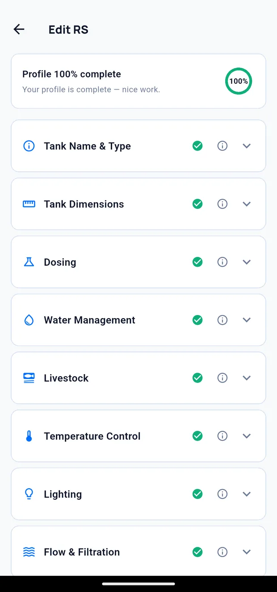
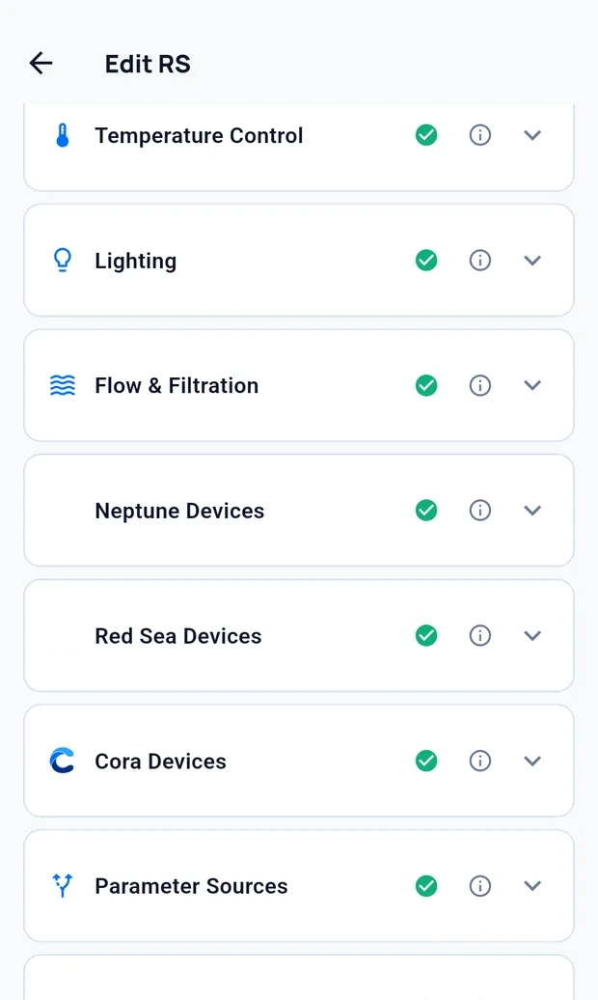

Your tank profile
The tank profile describes your system. Cora uses it to judge readings, calculate doses, and decide what is normal for your tank rather than for tanks in general.
To open it, tap the pencil on the right of the tank header. The small glyph beside the tank name is a quick rename, not this.
Guided setup
A profile has a lot in it, so Guided setup walks the sections one at a time — dosing, lighting, flow and filtration, livestock, your equipment — instead of presenting the whole form at once.
It is designed to be interrupted:
- Finish later leaves the profile where it is and returns you to the app. Your answers so far are kept.
- Reopening guided setup resumes at the section you stopped on, rather than starting again.
- Decide later skips a question you are not ready to answer without blocking the rest.
- Leaving a section with unsaved edits asks first, offering Keep editing or Leave.
The completeness figure on the profile — and the prompt that appears on the dashboard while it is below 100% — are entry points back into the same flow.

Completeness
The percentage at the top shows how much of the profile is filled in. A more complete profile produces more specific advice; an empty one leaves Cora working from defaults.
Sections
| Section | Covers |
|---|---|
| Tank Name & Type | What you call the tank, its type, and its age |
| Tank Dimensions | Physical size and total water volume |
| Dosing | What you dose and how |
| Water Management | Water changes, top-off, salinity targets |
| Livestock | What the tank holds and how heavily it is stocked |
| Temperature Control | Heating and cooling equipment |
| Lighting | Fixtures and photoperiod |
| Flow & Filtration | Pumps, skimming and media |
| Neptune devices | The Apex on this tank and its modules |
| Red Sea devices | ReefBeat units assigned here |
| Cora Max | Which screens serve this tank |
| Parameter sources | Which source each parameter is read from |
| Pests & treatments | What you have dealt with, and what you used |

Tap a section to expand it. The information icon beside each explains what the fields are used for.
Volume
Enter the actual water volume including the sump, not the display volume printed on the tank.
Tank age
Set the date the tank was started. Readings are assessed against what is normal for a tank of that age — a system three months old and one five years old are assessed differently. If the tank is still cycling, record it as such.
Keeping the profile current
Update the profile when the system changes: new equipment, a change in stocking, a different dosing regime. The profile is what Cora reasons from, so an out-of-date profile produces out-of-date advice.
Written for Cora Max 0.28.37 and Cora Mobile 0.5.55.
Still stuck? Email cora@coraiq.tech and we'll help.